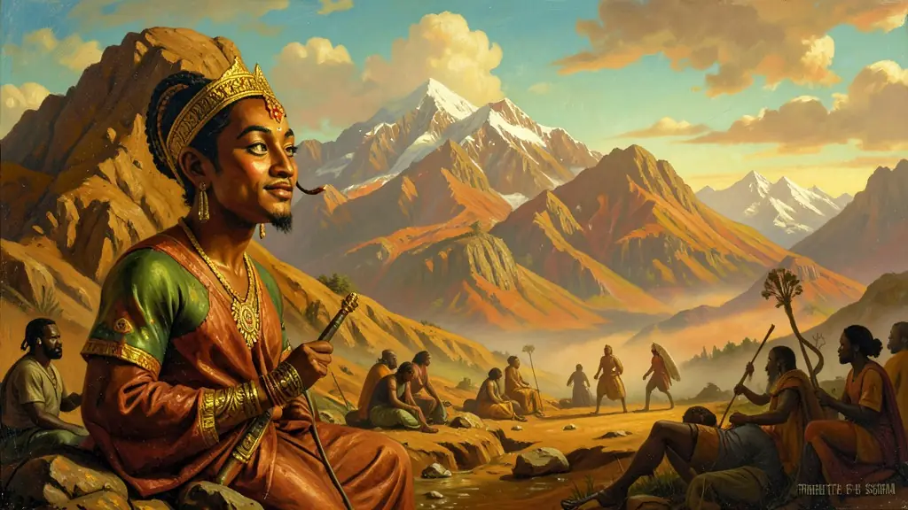
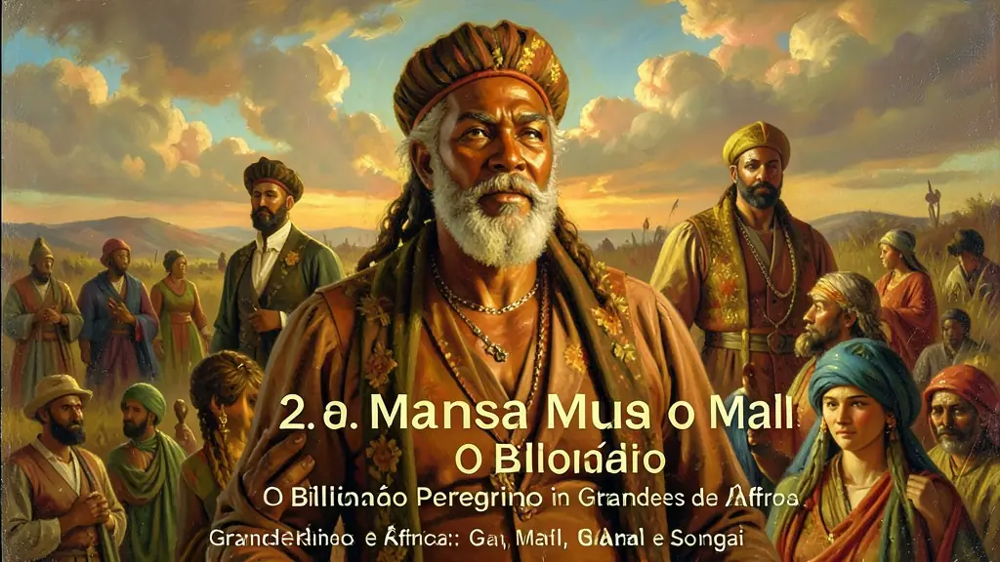
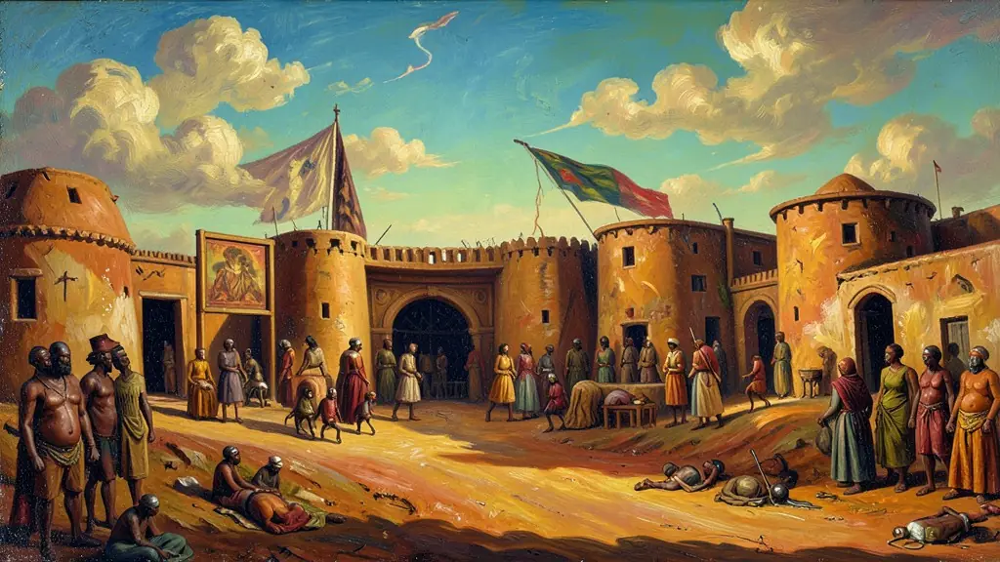

Capítulo 01
1. Gana: A Primeira Terra do Ouro
Gana não era o nome do país, mas o título de seu rei ('Senhor do Ouro'). O reino era tão rico que até os cachorros dos reis usavam coleiras de ouro. Eles controlavam o ponto de encontro entre os árabes que traziam sal do norte e os negros que extraíam ouro do sul. Sem minas próprias, Gana enriquecia apenas cobrando impostos de quem passava. Foi o primeiro Estado organizado da África Ocidental com um exército de 200 mil homens.

Capítulo 02
2. Mansa Musa e o Mali: O Bilionário Peregrino
Mansa Musa é considerado o homem mais rico que já existiu. Em 1324, ele foi a Meca com uma caravana de 60 mil pessoas e quilos de ouro em cada camelo. Ele deu tanto ouro de presente no Cairo que a inflação durou 10 anos na região. Musa não era apenas rico, era um visionário: trouxe arquitetos e poetas do mundo árabe para construir mesquitas e bibliotecas no Mali, colocando a África no mapa da alta cultura medieval.

Capítulo 03
3. Timbuktu: A Capital do Conhecimento
Esqueça a ideia de que a África era analfabeta. Em Timbuktu, no século XIV, um livro valia mais que o seu peso em ouro. A Universidade de Sankoré tinha 25 mil alunos de todo o mundo. Eles estudavam medicina (cirurgias de catarata eram comuns), direito e geografia. Quando os europeus chegaram, ficaram chocados ao encontrar bibliotecas privadas no deserto com milhares de manuscritos escritos por negros africanos séculos antes.

Capítulo 04
4. Griots: Os Guardiões da Palavra
Como guardar a história sem papel para todos? Através dos Griots. Eles eram os conselheiros dos reis e os contadores de histórias do povo. Um Griot decorava a linhagem de mil anos de uma família. Eles diziam: 'Quando um ancião morre na África, é uma biblioteca que se queima'. A palavra falada era sagrada e tinha força de lei. Até hoje, a cultura brasileira herda essa tradição oral nas rodas de samba e de capoeira.
Capítulo 05
5. O Legado Africano: Muito Além da Escravidão
O ENEM quer que você saiba que a África não começou na escravidão. Os africanos trazidos para o Brasil eram engenheiros, mineradores, agricultores e sábios que conheciam técnicas de metalurgia e irrigação superiores às dos portugueses. Estudar os reinos de Mali e Gana é reconhecer que a base da riqueza do Brasil e do mundo foi construída por pessoas que vinham de civilizações brilhantes e complexas.
Os impérios da savana africana, como Gana, Mali e Songai, foram centros de sofisticação intelectual e econômica muito antes da chegada massiva dos europeus. O controle das rotas comerciais transarianas, que ligavam o ouro do sul ao sal e tecidos do norte, permitiu o surgimento de cidades como Timbuktu, que abrigava universidades e vastas bibliotecas. A figura de Mansa Musa, o imperador do Mali, cujas peregrinações a Meca desestabilizavam o valor do ouro na região pelo volume de suas doações, simboliza a opulência dessas civilizações.
Diferente da visão eurocêntrica que retrata a África como um continente imutável até a colonização, as sociedades africanas possuíam estruturas políticas dinâmicas. Os Griots, contadores de histórias e guardiões da memória, desempenhavam um papel central na preservação das tradições e na legitimação dos governantes através da oralidade. A história africana é marcada por uma profunda integração com o mundo islâmico, ao mesmo tempo que preservava ritos e sistemas de parentesco locais, criando sínteses culturais únicas no mundo pré-moderno.
Compreender a história da pré-colônia africana é fundamental para o Enem, pois desconstrói o mito da África como um território sem história. O intercâmbio comercial e cultural no Oceano Índico e no Sahel demonstra que o continente estava perfeitamente integrado às redes globais de troca. O estudo dos reinos do Congo e do Benin, por exemplo, revela avanços na metalurgia e nas artes que desafiam as narrativas coloniais que justificavam a escravidão por uma suposta 'missão civilizatória' eurpeia.
Fonte: COSTA E SILVA, Alberto da. A Enxada e a Lança: A África antes dos Portugueses. Rio de Janeiro: Nova Fronteira, 2011.
Atividades interativas
Questões para fixar
A cidade de Timbuktu, no Império do Mali (século XIV), tornou-se mundialmente famosa por qual motivo principal?
Os 'Griots', figuras fundamentais em diversas sociedades da África Ocidental antiga, exerciam a função social de:
Qual foi o principal fator que contribuiu para o florescimento dos reinos de Gana, Mali e Songai na região do Sahel africano?
Qual foi o legado de Mansa Musa, o líder do Império do Mali, em relação à cidade de Timbuktu?
Qual era o papel dos Griots na sociedade dos reinos de Gana, Mali e Songai?